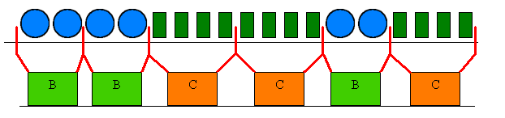

Canettes et bouteilles
Castor travaille dans une usine de sodas. Lorsque la boisson est prête, la première étape consiste à en remplir des bouteilles et des canettes. Une fois pleines, les bouteilles et les canettes sont amenées sur une table pour l'étape suivante : la mise en cartons. Les cartons B peuvent contenir deux bouteilles, les cartons C peuvent contenir quatre canettes.
L'illustration ci-dessous représente la situation sur la table après la première étape.

| Bouteille |
B | Carton de bouteilles |
| | Canette |
C | Carton de canettes |
Laquelle de ces images représente la situation sur la table après la mise en cartons, sachant que les bouteilles et les cannettes ont été emballées en restant dans le même ordre qu'au départ ?
La solution
On considère les objets de gauche à droite. Chaque fois que l'on rencontre deux bouteilles successives, on crée un carton B, et chaque fois que l'on rencontre quatre canettes successives, on crée un carton C. Le résultat est présenté ci-dessous :

La configuration obtenue correspond à la réponse C.
C'est de l'informatique
L'approche décrite dans la solution, qui consiste à parcourir les objets de gauche à droite, et à effectuer une action chaque fois que l'on rencontre un nouvel objet, est ce que l'on appelle un algorithme de balayage. Ici il s'agit d'un balayage simple parmi les bouteilles et canettes, où l'on ne fait qu'augmenter un compteur chaque fois que l'on rencontre un objet, et créer un carton dès que l'on a compté 2 bouteilles ou 4 canettes.
Les algorithmes de balayage sont toujours basés sur le principe du parcours des données dans un ordre bien choisi, mais l'action effectuée à chaque rencontre d'un objet peut impliquer l'utilisation de toutes sortes de structures de données pour maintenir à jour diverses informations au fur et à mesure de la progression.